Hi! So who I am? Eh ask me to tell you my in person, but as for personality, thats werid, as I act like this on class room and thena different way in another class!
Things I lowkey just do
DRAWING FOR FUNZIEES
I like drawing stuff, yeah thats about it. Why? BECAUSE IT'S FUN! And I like it, and if I like it, I'll do it!! What exactly do I DRAW? Well...
I draw MY CHARACTERS and other randow characters or things I get insaparation from. So it's what I want to draw and what I'M GOING TO DRAW!!!!
- GRABBING MY PAPER

- I sketch

- I trace the Final Image

- Then I Erase the Pencil Sketch

Then I'm DONE!!!!!! And I stare at it loud and proud!!!!!!!!!!!!!!!
Learning Pokemon battles
I love playing Pokemon champions, its the most fun I've had in a LONG while!
My Top FAVORITE Pokemon AND WHY!
Real Quick! It's name and then their image, so non-pokemon players aren't confused!
- Pikachu: THE GOAT
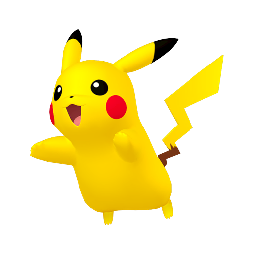
- Poliwag: He's neat and it's a tadpole
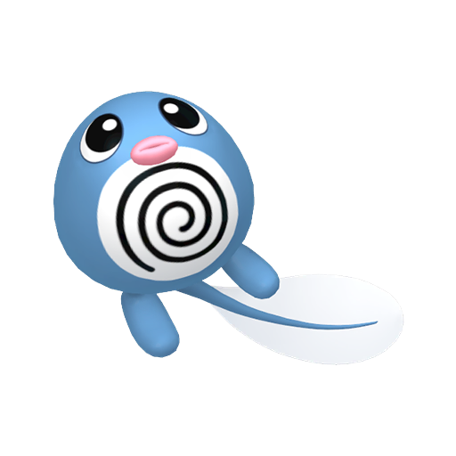
- Poliwhirl: Likable
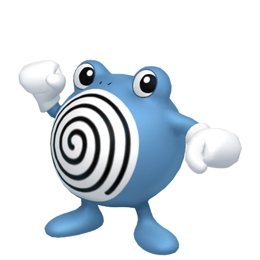
- Poliwrath: I DON'T care if he's bad or something, I just like him.
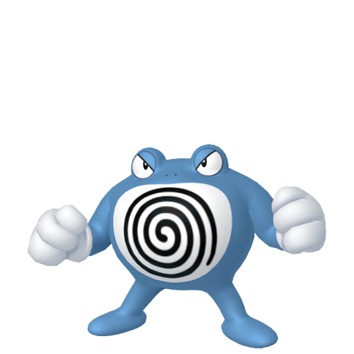
- Politoed: He's a frog, thats cool :3
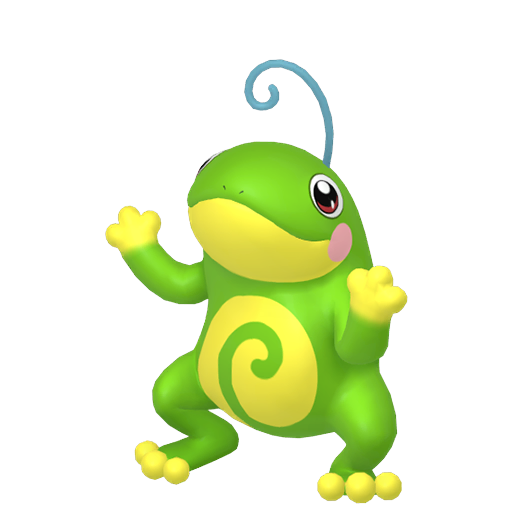
- Blaziken: My Gen 3 Starter Pick
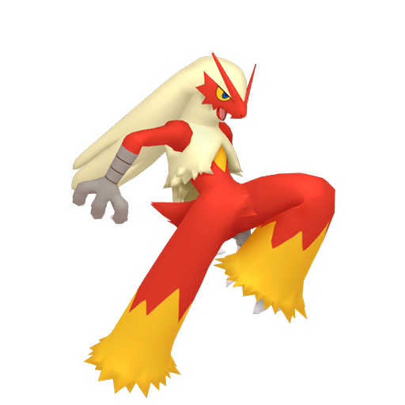
- Bewear: OH COME ON HE'S A BEAR I LIKE BEARS!!!!!
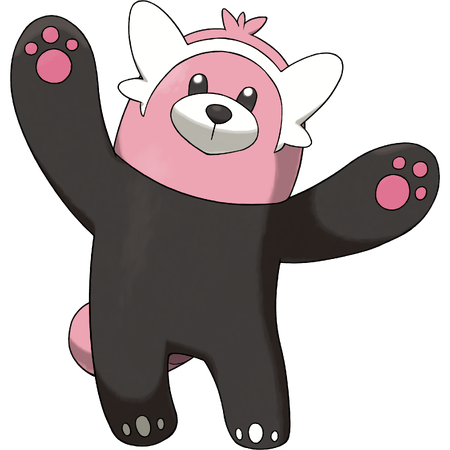
- Charizard: It's a flying fire lizard!!!!!!
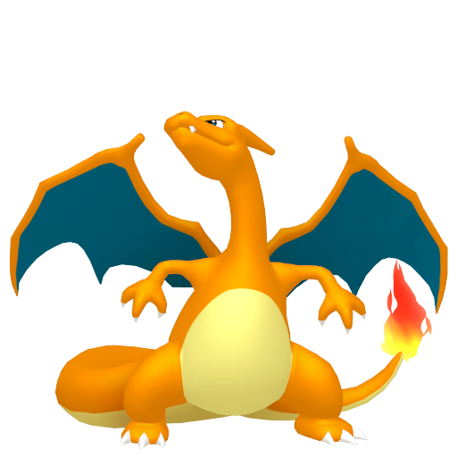
- Typhlosion: HE'S BASICALLY A LAND CHARIZARD!!!!!!!!!!!!! (No really lookup their stats, it's almost
indentical)
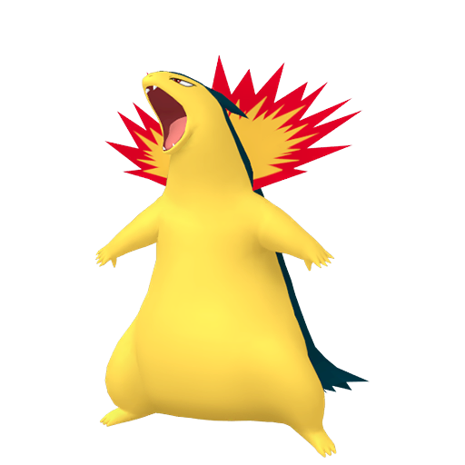
- Ampharos: Kinda grew on me so, it's on the list now.
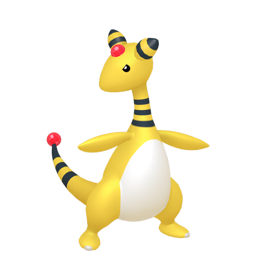
- Snorlax: He's like me all big and round, and we can all relate to him one way or another
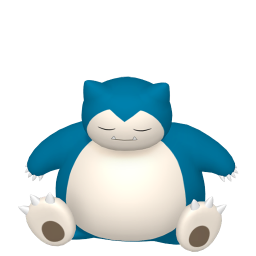
- Quagsire: I like it.
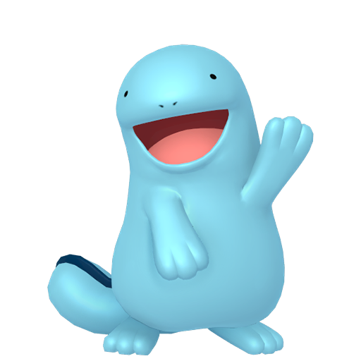
- Sylveon: I like it and it's pink
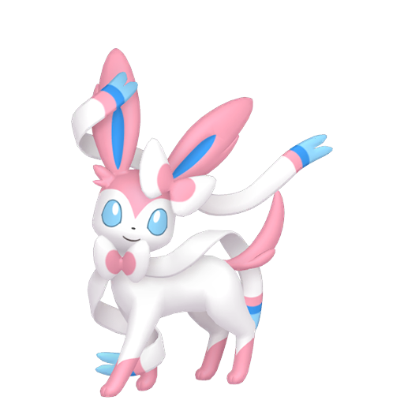
- Espeon: I like it's design, it's cute and it's purple!
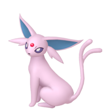
- Girafarig: I love this one! Don't use it much but still!
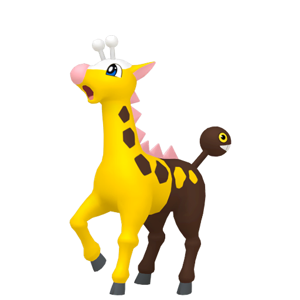
- Tyranitar: Love this psuedo legendary!
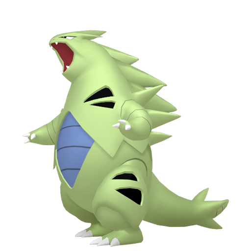
- Agumon and Greymon: NOT Pokemon, but I love Digimon too!


MY FAVORITE CHARACTERS!!!!!!!!!!!!!!!!
- Mario: THE OTHER GOAT!

- Scott Pilgrim: In my favorites list from his series.

- Stephen Stills: I like his design and he's pretty funny and cool

- Crona: I love Soul Eater, but Crona is top five characters from the series! I still love the main cast
though!

- Venom: Iconic villian, and I like him in the movies.